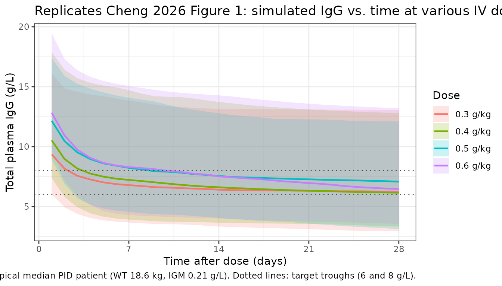
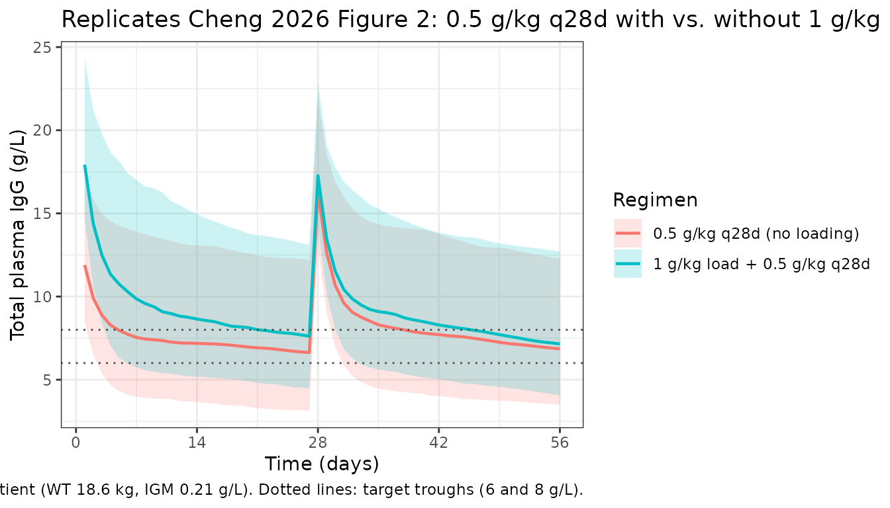

Cheng_2026_immunoglobulin
Source:vignettes/articles/Cheng_2026_immunoglobulin.Rmd
Cheng_2026_immunoglobulin.RmdModel and source
- Citation: Cheng IL, Huang ZH, Worth A, Booth C, Standing JF. Pharmacokinetic modelling of intravenous immunoglobulin in children with primary immunodeficiencies and secondary antibody deficiencies. Br J Clin Pharmacol. 2025;1-11. doi:10.1002/bcp.70420
- Description: Two-compartment population PK model for intravenous immunoglobulin (IVIG) replacement therapy in pediatric primary-immunodeficiency and secondary-antibody-deficiency patients (Cheng 2026)
- Article: https://doi.org/10.1002/bcp.70420
Population
The model was developed from a retrospective single-centre cohort of 64 children treated with intravenous immunoglobulin (IVIG) at a tertiary paediatric hospital in the United Kingdom between April 2019 and April 2024 (Cheng 2026 Table 2). Forty-four children had primary immunodeficiency (PID) and twenty had secondary antibody deficiency (SAD); fifteen of the SAD patients had antibody deficiency following rituximab and five following CAR-T cell therapy. The cohort spanned a wide age range (3 weeks to 16.8 years; median 4.08 years) and weight range (3.15 to 95.3 kg; median 18.6 kg). The median dose was 0.56 g/kg every 28 days (range 0.24 to 1.38 g/kg). PID patients received 0.3 g/kg every 3 weeks per local policy; SAD patients received 0.5 g/kg every 4 weeks. The median baseline IgG was 4 g/L (PID baselines were fixed at 4 g/L since these were established long-term IgRT patients), median absolute CD19+ B cell count was 0.07 × 10^9 cells/L, and median IgM was 0.21 g/L. Plasma IgG samples (n = 444) were predominantly trough samples; the assay’s lower limit of quantification was 0.07 g/L. Three IVIG products were used: Privigen (n = 53), Octagam (n = 9), and Gamunex (n = 2) (Cheng 2026 Table 3).
The same information is available programmatically via
readModelDb("Cheng_2026_immunoglobulin")$population after
the model is loaded.
Source trace
| Equation / parameter | Value | Source location |
|---|---|---|
lcl (CL for 70 kg PID) |
0.308 L/day | Cheng 2026 Table 4 (page 7) |
lvc (V1 for 70 kg) |
3.59 L | Cheng 2026 Table 4 |
lq (Q for 70 kg) |
1.08 L/day | Cheng 2026 Table 4 |
lvp (V2 for 70 kg) |
7.37 L | Cheng 2026 Table 4 |
lcbas (baseline IgG, PID, IGM = 0.21) |
5.67 g/L | Cheng 2026 Table 4 |
e_wt_cl_q (allometric exponent on CL, Q; fixed) |
0.75 | Cheng 2026 Methods, page 7 (theory-based, fixed in final model) |
e_wt_vc_vp (allometric exponent on V1, V2; fixed) |
1.0 | Cheng 2026 Methods, page 7 (theory-based, fixed) |
e_sad_cl (SAD/PID multiplicative ratio on CL) |
0.542 | Cheng 2026 Table 4 |
e_sad_cbas (SAD/PID multiplicative ratio on CBAS) |
0.541 | Cheng 2026 Table 4 |
e_igm_cbas (power exponent for IgM on CBAS) |
0.11 | Cheng 2026 Table 4 |
| IIV CL (CV%) | 42.7% | Cheng 2026 Table 4 |
| IIV V2 (CV%) | 138.6% | Cheng 2026 Table 4 |
| IIV CBAS (CV%) | 49.3% | Cheng 2026 Table 4 |
addSd (additive residual error) |
0.812 g/L | Cheng 2026 Table 4 |
propSd (proportional residual error) |
0.117 | Cheng 2026 Table 4 |
| Two-compartment ODE structure with first-order elimination | n/a | Cheng 2026 Methods (page 5); confirmed in Results (page 6) |
Allometric scaling form ((WT/70)^exp) |
n/a | Cheng 2026 eq. 1 (page 5) |
Categorical covariate form (theta^DT) |
n/a | Cheng 2026 eq. 2 (page 5) |
Continuous covariate power form ((IGM/0.21)^theta) |
n/a | Cheng 2026 eq. 3 (page 5) |
| Total observed IgG = exogenous + CBAS | n/a | Cheng 2026 Methods (page 5): “measured IgG was assumed to be the sum of endogenous IgG, the baseline IgG (CBAS) level prior to treatment and exogenous therapeutic Ig” |
Errata
No published erratum or corrigendum was found for this paper as of the model extraction date. Two notational ambiguities were noted in the source and are worth flagging for readers:
- The “What this study adds” highlight box and the abstract describe
SAD patients as having “54% lower clearance” than PID patients. The
actual parameter estimate (Cheng 2026 Table 4) is
theta_DT_CL = 0.542, which multiplies CL on the SAD branch — i.e., SAD CL is 54.2% of PID CL, or equivalently 45.8% lower than PID CL. The Discussion’s phrasing (“the clearance for SAD patients being half that of PID patients”) matches the parameter value; the highlight-box “54% lower” appears to confuse the multiplier with the percent-change. The model file uses the table value (0.542) directly. - In the Results paragraph describing the final model, the source writes “IgM cell count” (page 7); from context this should read “IgM level” (IgM is an antibody concentration, not a cell count). The parameter is the continuous IgM concentration (g/L) tabulated in Cheng 2026 Table 2.
Virtual cohort
Original individual-level IgG data are not publicly available. The figures below use a virtual cohort whose covariate distributions approximate the modelled population: weight-by-age sampled from the published Table 2 medians and ranges, disease type drawn from the 44 PID / 20 SAD split, and IgM drawn from the published distribution.
set.seed(20260428)
n_subj <- 200
# Disease split: 44 PID / 20 SAD per Table 2 (PID = reference, DIS_SAD = 0)
n_pid <- round(n_subj * 44 / 64)
n_sad <- n_subj - n_pid
# Body weight: sample on log scale across the reported pediatric range
# (3.15-95.3 kg). Use a log-uniform distribution truncated to the published
# extremes; this is conservative relative to the actual right-skewed
# weight distribution but gives roughly the published 18.6 kg median.
sample_wt <- function(n) {
u <- runif(n)
exp(log(3.15) + u * (log(95.3) - log(3.15)))
}
# IgM: log-uniform across the reported range (0.03-5.61 g/L)
sample_igm <- function(n) {
u <- runif(n)
exp(log(0.03) + u * (log(5.61) - log(0.03)))
}
cohort <- data.frame(
ID = seq_len(n_subj),
WT = sample_wt(n_subj),
DIS_SAD = c(rep(0L, n_pid), rep(1L, n_sad)),
IGM = sample_igm(n_subj)
)
cat(sprintf(
"Cohort: n=%d, PID=%d, SAD=%d; weight median=%.1f kg, IgM median=%.2f g/L\n",
nrow(cohort), n_pid, n_sad, median(cohort$WT), median(cohort$IGM)
))
#> Cohort: n=200, PID=138, SAD=62; weight median=16.5 kg, IgM median=0.42 g/LSimulation — replicate Figure 1
Cheng 2026 Figure 1 shows estimated IgG levels at various dosing regimens (maintenance doses of 0.3, 0.4, 0.5, 0.6 g/kg) over 28 days. The paper simulates 1000 virtual patients using the median values of relevant covariates (weight 18.6 kg, IGM 0.21 g/L, DIS_SAD = 0 for PID). We replicate the same scenario at the cohort-median typical patient.
mod <- readModelDb("Cheng_2026_immunoglobulin")
# Typical median PID patient
typical_wt <- 18.6
typical_igm <- 0.21
typical_dt <- 0L
# Doses to compare (g/kg) over 28 days
doses_gkg <- c(0.3, 0.4, 0.5, 0.6)
obs_grid <- seq(0, 28, by = 1)
# Build a single multi-cohort event table; one cohort per dose level. Each
# cohort gets a disjoint ID range via id_offset so rxSolve does not collide
# subjects across cohorts.
make_cohort <- function(dose_gkg, n, id_offset) {
amt <- dose_gkg * typical_wt
data.frame(
ID = id_offset + seq_len(n),
WT = typical_wt,
DIS_SAD = typical_dt,
IGM = typical_igm,
dose_gkg = dose_gkg,
amt = amt
)
}
n_per <- 200
cohorts <- bind_rows(lapply(seq_along(doses_gkg), function(i) {
make_cohort(doses_gkg[i], n_per, id_offset = (i - 1L) * n_per)
}))
# Build dosing + observation event table per subject
dose_rows <- cohorts |>
transmute(
id = ID,
time = 0,
amt = amt,
evid = 1L,
cmt = "central",
WT, DIS_SAD, IGM, dose_gkg
)
obs_rows <- cohorts[rep(seq_len(nrow(cohorts)), each = length(obs_grid)), ] |>
mutate(
id = ID,
time = rep(obs_grid, times = nrow(cohorts)),
amt = 0,
evid = 0L,
cmt = "central"
) |>
select(id, time, amt, evid, cmt, WT, DIS_SAD, IGM, dose_gkg)
events <- bind_rows(dose_rows, obs_rows) |> arrange(id, time, desc(evid))
stopifnot(!anyDuplicated(events[, c("id", "time", "evid")]))
set.seed(2026)
sim <- rxode2::rxSolve(mod, events = events, keep = c("dose_gkg"))
#> ℹ parameter labels from comments will be replaced by 'label()'
sim |>
filter(time > 0) |>
group_by(time, dose_gkg) |>
summarise(
Q05 = quantile(Cc, 0.05, na.rm = TRUE),
Q50 = quantile(Cc, 0.50, na.rm = TRUE),
Q95 = quantile(Cc, 0.95, na.rm = TRUE),
.groups = "drop"
) |>
mutate(dose_label = sprintf("%.1f g/kg", dose_gkg)) |>
ggplot(aes(time, Q50, colour = dose_label, fill = dose_label)) +
geom_ribbon(aes(ymin = Q05, ymax = Q95), alpha = 0.20, colour = NA) +
geom_line(linewidth = 0.8) +
geom_hline(yintercept = c(6, 8), linetype = "dotted", colour = "grey30") +
scale_x_continuous(breaks = seq(0, 28, by = 7)) +
labs(
x = "Time after dose (days)",
y = "Total plasma IgG (g/L)",
colour = "Dose",
fill = "Dose",
title = "Replicates Cheng 2026 Figure 1: simulated IgG vs. time at various IV dose levels",
caption = "Typical median PID patient (WT 18.6 kg, IGM 0.21 g/L). Dotted lines: target troughs (6 and 8 g/L)."
) +
theme_bw()
Loading-dose comparison — replicate Figure 2
Cheng 2026 Figure 2 compares dosing regimens with and without a 1 g/kg loading dose on Day 0. Below we simulate 0.5 g/kg every 28 days for two cycles, with and without the loading dose, in the same typical PID patient.
n_per <- 200
duration_days <- 56 # two 28-day cycles
obs_grid_2 <- seq(0, duration_days, by = 1)
# Helper: build events for a regimen
make_regimen <- function(label, dose_gkg, has_loading, n, id_offset) {
ids <- id_offset + seq_len(n)
base <- data.frame(
id = ids,
WT = typical_wt,
DIS_SAD = typical_dt,
IGM = typical_igm,
regimen = label
)
amt_maint <- dose_gkg * typical_wt
amt_load <- 1.0 * typical_wt
doses <- if (has_loading) {
bind_rows(
data.frame(id = ids, time = 0, amt = amt_load, evid = 1L, cmt = "central"),
data.frame(id = ids, time = 28, amt = amt_maint, evid = 1L, cmt = "central")
)
} else {
bind_rows(
data.frame(id = ids, time = 0, amt = amt_maint, evid = 1L, cmt = "central"),
data.frame(id = ids, time = 28, amt = amt_maint, evid = 1L, cmt = "central")
)
}
obs <- expand.grid(id = ids, time = obs_grid_2) |>
mutate(amt = 0, evid = 0L, cmt = "central")
bind_rows(doses, obs) |>
left_join(base, by = "id") |>
arrange(id, time, desc(evid))
}
regimens <- bind_rows(
make_regimen("0.5 g/kg q28d (no loading)", 0.5, FALSE, n_per, id_offset = 0L),
make_regimen("1 g/kg load + 0.5 g/kg q28d", 0.5, TRUE, n_per, id_offset = n_per)
)
stopifnot(!anyDuplicated(regimens[, c("id", "time", "evid")]))
set.seed(20262)
sim2 <- rxode2::rxSolve(mod, events = regimens, keep = c("regimen"))
#> ℹ parameter labels from comments will be replaced by 'label()'
sim2 |>
filter(time > 0) |>
group_by(time, regimen) |>
summarise(
Q05 = quantile(Cc, 0.05, na.rm = TRUE),
Q50 = quantile(Cc, 0.50, na.rm = TRUE),
Q95 = quantile(Cc, 0.95, na.rm = TRUE),
.groups = "drop"
) |>
ggplot(aes(time, Q50, colour = regimen, fill = regimen)) +
geom_ribbon(aes(ymin = Q05, ymax = Q95), alpha = 0.20, colour = NA) +
geom_line(linewidth = 0.8) +
geom_hline(yintercept = c(6, 8), linetype = "dotted", colour = "grey30") +
scale_x_continuous(breaks = seq(0, duration_days, by = 14)) +
labs(
x = "Time (days)",
y = "Total plasma IgG (g/L)",
colour = "Regimen",
fill = "Regimen",
title = "Replicates Cheng 2026 Figure 2: 0.5 g/kg q28d with vs. without 1 g/kg loading dose",
caption = "Typical median PID patient (WT 18.6 kg, IGM 0.21 g/L). Dotted lines: target troughs (6 and 8 g/L)."
) +
theme_bw()
# Probability of target attainment (PTA) above 6 and 8 g/L per regimen
pta <- sim2 |>
filter(time > 0, time <= duration_days) |>
group_by(regimen) |>
summarise(
pta_above_6 = mean(Cc > 6, na.rm = TRUE),
pta_above_8 = mean(Cc > 8, na.rm = TRUE),
.groups = "drop"
)
knitr::kable(
pta,
digits = 3,
caption = "Simulated proportion of post-dose time with total IgG > 6 g/L and > 8 g/L."
)| regimen | pta_above_6 | pta_above_8 |
|---|---|---|
| 0.5 g/kg q28d (no loading) | 0.733 | 0.488 |
| 1 g/kg load + 0.5 g/kg q28d | 0.821 | 0.576 |
PKNCA validation — replicate Cheng 2026 AUC values
Cheng 2026 reports a 28-day AUC of 200.2 (CI 194.4-206.2), 211.5
(205.6-217.5), and 222.4 (216.6-228.5) g/L·day for 0.4, 0.5, and 0.6
g/kg infusions respectively, in the median typical patient. Note that
the model defines Cc as total IgG
(exogenous drug plus the endogenous CBAS baseline), so the NCA-derived
AUC includes the baseline contribution and is directly comparable to the
published AUC values.
sim_nca <- sim |>
as.data.frame() |>
filter(!is.na(Cc), time >= 0, time <= 28) |>
mutate(treatment = sprintf("%.1f g/kg", dose_gkg)) |>
select(id, time, Cc, treatment)
dose_nca <- events |>
filter(evid == 1, time == 0) |>
mutate(treatment = sprintf("%.1f g/kg", dose_gkg)) |>
select(id, time, amt, treatment)
conc_obj <- PKNCA::PKNCAconc(sim_nca, Cc ~ time | treatment + id,
concu = "g/L", timeu = "day")
dose_obj <- PKNCA::PKNCAdose(dose_nca, amt ~ time | treatment + id,
doseu = "g")
intervals <- data.frame(
start = 0,
end = 28,
cmax = TRUE,
tmax = TRUE,
auclast = TRUE,
cmin = TRUE
)
nca_data <- PKNCA::PKNCAdata(conc_obj, dose_obj, intervals = intervals)
nca_res <- suppressWarnings(PKNCA::pk.nca(nca_data))
#> ■■■■■■■■■■■■■■ 44% | ETA: 3s
#> ■■■■■■■■■■■■■■■■■■■■■■■■■■■■■ 94% | ETA: 0s
nca_summary <- summary(nca_res)
knitr::kable(nca_summary,
caption = "Simulated NCA over the 28-day dosing interval (total IgG, including endogenous baseline).")| Interval Start | Interval End | treatment | N | AUClast (day*g/L) | Cmax (g/L) | Cmin (g/L) | Tmax (day) |
|---|---|---|---|---|---|---|---|
| 0 | 28 | 0.3 g/kg | 200 | 192 [38.3] | 11.7 [21.9] | 6.13 [43.0] | 0.000 [0.000, 0.000] |
| 0 | 28 | 0.4 g/kg | 200 | 204 [38.5] | 13.8 [19.3] | 6.40 [42.7] | 0.000 [0.000, 0.000] |
| 0 | 28 | 0.5 g/kg | 200 | 205 [34.7] | 15.4 [16.2] | 6.19 [40.7] | 0.000 [0.000, 0.000] |
| 0 | 28 | 0.6 g/kg | 200 | 236 [35.7] | 18.1 [15.6] | 7.04 [43.0] | 0.000 [0.000, 0.000] |
Comparison against Cheng 2026
nca_tbl <- as.data.frame(nca_res$result)
simulated_aucs <- nca_tbl |>
filter(PPTESTCD == "auclast") |>
group_by(treatment) |>
summarise(
AUC_sim_median = median(PPORRES, na.rm = TRUE),
AUC_sim_q025 = quantile(PPORRES, 0.025, na.rm = TRUE),
AUC_sim_q975 = quantile(PPORRES, 0.975, na.rm = TRUE),
.groups = "drop"
)
published <- tibble::tibble(
treatment = c("0.4 g/kg", "0.5 g/kg", "0.6 g/kg"),
AUC_pub_median = c(200.2, 211.5, 222.4),
AUC_pub_lo = c(194.4, 205.6, 216.6),
AUC_pub_hi = c(206.2, 217.5, 228.5)
)
comparison <- published |>
left_join(simulated_aucs, by = "treatment") |>
mutate(pct_diff = 100 * (AUC_sim_median - AUC_pub_median) / AUC_pub_median)
knitr::kable(
comparison,
digits = 1,
caption = "Simulated vs. published 28-day AUC of total plasma IgG (g/L·day) for the typical median PID patient. The published 95% CIs reflect parameter uncertainty across 1000 NONMEM simulation replicates; the simulated CIs reflect between-subject and residual variability across n = 200 virtual patients per dose level."
)| treatment | AUC_pub_median | AUC_pub_lo | AUC_pub_hi | AUC_sim_median | AUC_sim_q025 | AUC_sim_q975 | pct_diff |
|---|---|---|---|---|---|---|---|
| 0.4 g/kg | 200.2 | 194.4 | 206.2 | 207.4 | 100.4 | 434.3 | 3.6 |
| 0.5 g/kg | 211.5 | 205.6 | 217.5 | 204.5 | 111.7 | 387.7 | -3.3 |
| 0.6 g/kg | 222.4 | 216.6 | 228.5 | 235.8 | 123.9 | 444.2 | 6.0 |
Assumptions and deviations
- IIV correlation structure: Cheng 2026 reports that IIV was parameterised using a “variance-covariance matrix” (i.e., a block omega with off-diagonal correlations between etas), but Table 4 only lists the diagonal CV% values (CL 42.7%, V2 138.6%, CBAS 49.3%). Without the published off-diagonal covariance terms, the etas in the packaged model are independent; downstream uncertainty in joint parameter draws will therefore be slightly larger than the source.
-
IIV on V1 vs. V2: Cheng 2026 Methods describes IIV
as “for clearance, volume of distribution and baseline IgG”, but the
final-model Table 4 reports IIV on V2 (peripheral)
rather than V1 (central). This packaged model follows Table 4 (the
authoritative final-model column) and applies IIV to
vp(V2), notvc(V1). -
Allometric exponents fixed at theory-based values:
0.75 (CL/Q) and 1.0 (V1/V2) per Cheng 2026 Methods, page 7. The base
model estimated values near these (0.788 for CL, 0.743 for V) but with
parameter collinearity; the authors fixed the exponents in the final
model. The packaged model uses
fixed()to reflect this. -
Endogenous IgG handling: Total observed plasma IgG
= exogenous drug-derived contribution (
central / vc) + endogenous baseline (cbas). The CBAS value depends on disease type and IgM level; for PID at IgM median (0.21 g/L), CBAS = 5.67 g/L. This means the modelledCcis the total assayed IgG, not just the drug component, and NCA values will include the baseline contribution. - Virtual cohort covariate distributions: The original individual-level data are not publicly available. The replicate-figure cohorts use the published-table extremes (weight 3.15-95.3 kg, IgM 0.03-5.61 g/L) and the 44/20 PID/SAD ratio reported in Table 2. Sex is not a model covariate (Cheng 2026 Methods: sex did not contribute to model improvement); race and ethnicity are not reported in the source.
- Dosing: Modelled as IV bolus into the central compartment. Cheng 2026 describes “intravenous Ig” without specifying infusion duration; the paper’s own simulations are reported on the same single-event basis.
- AUC interpretation: The simulated 28-day AUC includes both the exogenous-drug contribution and the endogenous CBAS baseline (5.67 × 28 ≈ 158.8 g/L·day for the typical PID patient). The published AUC values (200.2-222.4 g/L·day) are consistent with this interpretation; comparing drug-only AUC (subtracting the baseline contribution) against the published numbers would understate the simulated value.